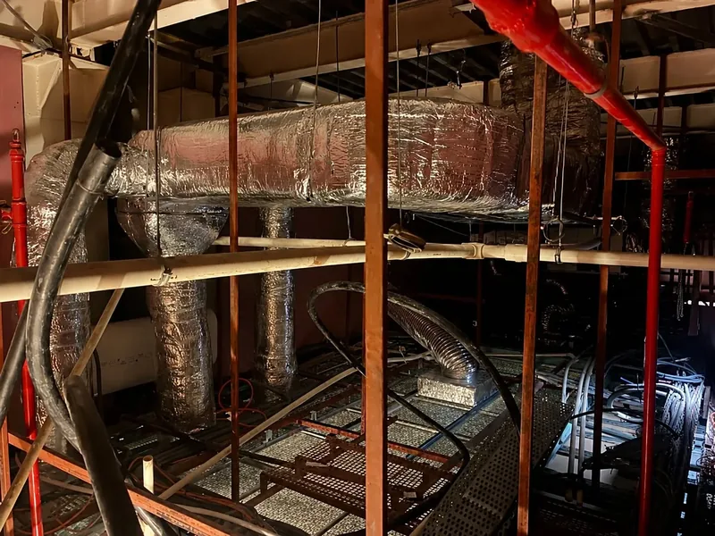

ხუთი საინჟინრო სისტემა — ერთი კოორდინირებული პროექტიFive engineering systems, one coordinated project
ვგეგმავთ, ვაკოორდინირებთ და მხარს ვუჭერთ HVAC, სახანძრო, ელექტრო, წყალმომარაგებისა და BMS სისტემების განხორციელებას — პროექტის მოთხოვნებიდან ობიექტამდე.We plan, coordinate and support HVAC, fire safety, electrical, plumbing and BMS systems—from project requirements through site execution.
შენობის სისტემების სექციაBuilding systems sectionMEP / 05
ძირითადი საინჟინრო სისტემებიCore Engineering Systems
ხუთი თანაბარი დისციპლინა, კოორდინირებული ერთ სივრცეშიFive equal disciplines, coordinated in one space
თითოეულ სისტემას საკუთარი დანიშნულება და ტექნიკური მოთხოვნები აქვს. პროექტში ისინი ერთიანდება არქიტექტურასთან, კონსტრუქციასთან და ერთმანეთთან.Each system has a distinct purpose and technical requirements. Within a project, they are coordinated with architecture, structure and one another.
M-01 / AIR
HVAC სისტემებიHVAC systems
გათბობა, გაგრილება და ვენტილაციაHeating, cooling and ventilation
დანიშნულებაPurpose
ჰაერის ხარისხის, თერმული კომფორტისა და მართვადი კლიმატური რეჟიმის ტექნიკური უზრუნველყოფა.Technical systems for air quality, thermal comfort and controlled indoor climate.
მოცულობა / შესაძლებლობებიScope / capabilities
ვენტილაცია და ჰაერის გაცვლაVentilation and air exchange
გათბობა და გაგრილებაHeating and cooling
კომერციული სამზარეულოს ვენტილაციაCommercial kitchen ventilation
დანადგარებისა და ტრასების კოორდინაციაEquipment and route coordination
პროექტში ჩართულობაTypical project involvement
სისტემების დაგეგმვა და კოორდინაცია ობიექტის ფუნქციის, დატვირთვების, არქიტექტურისა და ექსპლუატაციის მოთხოვნების მიხედვით.Planning and coordination around building function, loads, architecture and operational requirements.
F-02 / FIRE
სახანძრო უსაფრთხოებაFire Safety
სპრინკლერები და სისტემების კოორდინაციაSprinklers and system coordination
დანიშნულებაPurpose
სახანძრო სისტემების სივრცული და ტექნიკური შეთანხმება ობიექტის მოთხოვნებთან და სხვა საინჟინრო კომუნიკაციებთან.Spatial and technical alignment of fire systems with project requirements and other engineering services.
მოცულობა / შესაძლებლობებიScope / capabilities
სპრინკლერული სისტემების კოორდინაციაSprinkler system coordination
მილებისა და მოწყობილობების განლაგებაPipe and equipment layout
ჭერის ელემენტებთან შეთანხმებაCoordination with ceiling elements
შესრულების ტექნიკური მხარდაჭერაTechnical support during execution
პროექტში ჩართულობაTypical project involvement
სახანძრო მოთხოვნების დაკავშირება არქიტექტურასთან, ჭერის გეგმებთან და სხვა სისტემების მარშრუტებთან.Alignment of fire-system requirements with architecture, ceiling layouts and other service routes.
E-03 / POWER
ელექტრო სისტემებიElectrical systems
ძალური სისტემები, განათება და საკაბელო ტრასებიPower, lighting and cable routes
დანიშნულებაPurpose
ელექტრო ინფრასტრუქტურის კოორდინირებული დაგეგმვა პროექტის ფუნქციური მოთხოვნების მიხედვით.Coordinated planning of electrical infrastructure around the project’s functional requirements.
მოცულობა / შესაძლებლობებიScope / capabilities
ძალური სისტემები და დატვირთვებიPower systems and loads
განათებაLighting
საკაბელო ტრასებიCable routing
დაბალი დენების კოორდინაციაLow-current coordination
პროექტში ჩართულობაTypical project involvement
დატვირთვების, განათებისა და საკაბელო მარშრუტების შეთანხმება არქიტექტურასთან და სხვა საინჟინრო სისტემებთან.Coordination of loads, lighting and cable routes with architecture and other engineering systems.
P-04 / WATER
წყალმომარაგება და კანალიზაციაPlumbing & Sanitary
წყალი, დრენაჟი და სანიტარული კვანძებიWater, drainage and sanitary systems
დანიშნულებაPurpose
წყლისა და კანალიზაციის სისტემების ფუნქციური დაგეგმვა და სხვა კომუნიკაციებთან შეთანხმება.Functional planning of water and drainage systems with coordinated routing across the project.
მოცულობა / შესაძლებლობებიScope / capabilities
ცივი და ცხელი წყალმომარაგებაCold and hot water supply
საყოფაცხოვრებო და ტექნიკური კანალიზაციაDomestic and technical drainage
ტექნიკური კვანძები და ტრასებიTechnical rooms and routes
პროექტში ჩართულობაTypical project involvement
ქსელების მარშრუტების, ტექნიკური კვანძებისა და მოწყობილობების კავშირების დაგეგმვა არქიტექტურული და სამშენებლო შეზღუდვების გათვალისწინებით.Planning network routes, technical rooms and equipment connections around architectural and construction constraints.
B-05 / CONTROL
BMS და ავტომატიზაციაBMS & Automation
მონიტორინგი, მართვა და სისტემების ინტეგრაციაMonitoring, control and systems integration
დანიშნულებაPurpose
შესაბამისი საინჟინრო სისტემების მონიტორინგისა და მართვის ლოგიკის ერთიან გარემოში კოორდინაცია.Coordination of monitoring and control logic for relevant engineering systems within one environment.
მოცულობა / შესაძლებლობებიScope / capabilities
BMS ინტეგრაციაBMS integration
მართვის ლოგიკაControl logic
HVAC სისტემების კონტროლი და მონიტორინგიHVAC control and monitoring
მართვის წერტილებისა და ავტომატიზაციის ლოგიკის შეთანხმება სისტემების მოთხოვნებთან და პროექტის მოცულობასთან.Alignment of control points and automation logic with system requirements and the agreed project scope.
პროექტის კონკრეტული შედეგებიConcrete project outputs
რას ვაწვდითWhat we deliver
კონკრეტული შედეგები განისაზღვრება პროექტის ეტაპისა და შეთანხმებული სამუშაო მოცულობის მიხედვით.Specific outputs depend on the project stage and the agreed scope of work.
01
ანალიზი და მოთხოვნების განსაზღვრაAnalysis and requirements definition
საწყისი მონაცემების, ფუნქციური მოთხოვნებისა და ტექნიკური შეზღუდვების შეფასება.Review of project inputs, functional requirements and technical constraints.
02
კოორდინირებული ნახაზები ან მოდელიCoordinated drawings or model
შეთანხმებული მოცულობის მიხედვით — საინჟინრო ნახაზები და/ან კოორდინირებული მოდელი.Depending on scope, engineering drawings and/or a coordinated model.
03
სპეციფიკაციები და სამუშაოს მოცულობაSpecifications and defined work scope
როდესაც პროექტი მოითხოვს — ტექნიკური სპეციფიკაციები და მკაფიოდ განსაზღვრული სამუშაოს მოცულობა.Where required, technical specifications and a clearly defined work scope.
04
ობიექტისა და ჩაბარების მხარდაჭერაSite and handover support
შეთანხმებული ჩართულობის ფარგლებში — ტექნიკური განმარტებები, ობიექტზე მხარდაჭერა და მიღება-ჩაბარების პროცესში დახმარება.Within the agreed involvement: technical clarifications, site support and assistance during acceptance or handover.
პროექტის განხორციელება და ტექნიკური მხარდაჭერაProject Delivery and Technical Support
სისტემების მიღმა — მხარდაჭერა პროექტის სხვადასხვა ეტაპზეBeyond the systems—support across project stages
ჩართულობის ფორმა და შედეგები ყოველთვის განისაზღვრება პროექტის საჭიროებებითა და შეთანხმებული მოცულობით.The form of involvement and its outputs are always defined by project needs and the agreed scope.
06
BIM / Revit და სისტემების კოორდინაციაand systems coordination
სისტემების ერთიან მოდელში გაერთიანება, კოლიზიების კონტროლი და არქიტექტურასა და კონსტრუქციასთან შეთანხმება.Integration of systems in one model, clash control and alignment with architecture and structure.
Revit MEP · კოორდინირებული მოდელი და ნახაზებიRevit MEP · coordinated model and drawings
07
MEP პროექტის მართვა და კონსულტაციაMEP project management and consulting
ტექნიკური საკითხების კოორდინაცია, გადაწყვეტილებების განხილვა და პროექტის სამუშაო მოცულობის შეთანხმება.Coordination of technical issues, review of decisions and alignment of the project work scope.
ტექნიკური კონსულტაცია · კოორდინაციის მხარდაჭერაTechnical consultation · coordination support
08
სამშენებლო და ტექნიკური ზედამხედველობაConstruction and technical supervision
შეთანხმებული ტექნიკური გადაწყვეტის მიხედვით შესრულების განხილვა და ობიექტზე წარმოქმნილი საკითხების მხარდაჭერა.Review of execution against the agreed technical solution and support for technical questions arising on site.
ობიექტზე ტექნიკური მხარდაჭერა · განმარტებებიTechnical site support · clarifications
სისტემების საპროექტო მონაცემებისა და მუშაობის პირობების განხილვა შეთანხმებული კვლევის ფარგლებში.Review of system design inputs and operating conditions within an agreed study scope.
კვლევის მოცულობა და რეკომენდაციები — შეთანხმების მიხედვითStudy scope and recommendations—as agreed
10
პერიოდული ინსპექტირება და ტექნიკური მომსახურებაPeriodic inspection and technical maintenance
შეთანხმებული საინჟინრო სისტემების დაგეგმილი ტექნიკური შემოწმება და მომსახურების მხარდაჭერა.Scheduled technical review and maintenance support for the agreed engineering systems.
პერიოდული შემოწმება · ტექნიკური მომსახურების მხარდაჭერაPeriodic inspection · maintenance support

CASE / 01City Mall Tbilisi
რეალური პროექტის მაგალითიProject proof
Sameo Smash
დასრულებულ კომერციულ სივრცეში KAZMA-მ შეასრულა HVAC სისტემებისა და სახანძრო სპრინკლერული ქსელის კოორდინაცია, მონტაჟი და ობიექტზე ტექნიკური მხარდაჭერა.For the completed commercial space, KAZMA delivered coordination, installation and on-site technical support for HVAC systems and the fire-protection sprinkler network.
გამოგვიგზავნეთ პროექტის ძირითადი ინფორმაციაSend us the essential project information
გამოგვიგზავნეთ პროექტის ტიპი და ფართობი, მიმდინარე ეტაპი და არსებული ნახაზები — გეტყვით, როგორ შეგვიძლია პროექტში ჩართვა.Send us the project type and area, its current stage and any available drawings. We’ll outline how KAZMA can support the project.
01პროექტის ტიპი და ფართობიProject type and area02მიმდინარე ეტაპიCurrent project stage03არსებული ნახაზებიAvailable drawings